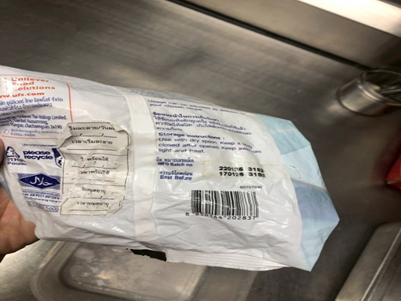
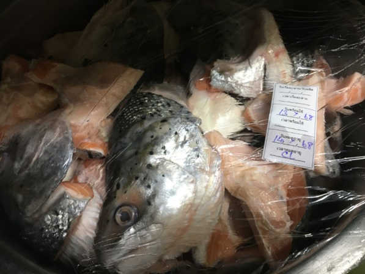
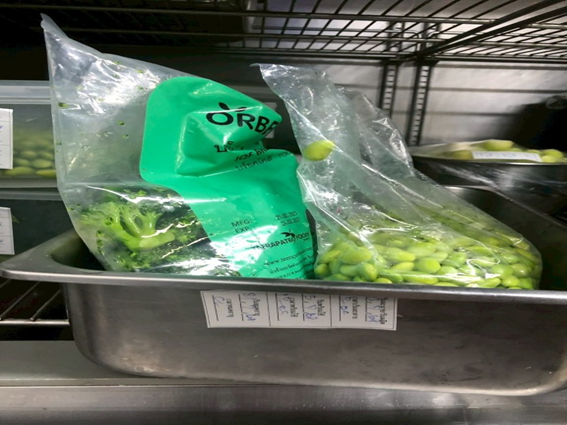
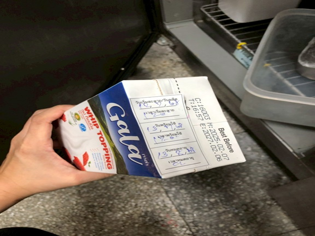
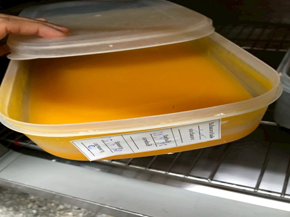

E.Shelf life / Holding time
| NO | Evidence | Not Complied With Standard | Issue Type |
|---|---|---|---|
| 1 | พบวัตถุดิบ/ ผลิตภัณฑ์ไม่ระบุอายุ (อายุน้ำมันพริกเผา ครัวร้อน ลบเลือน) |
Normal | |
| 2 |  | พบวัตถุดิบ/ ผลิตภัณฑ์ระบุอายุผิด |
Normal |
| 3 |  | พบวัตถุดิบ/ ผลิตภัณฑ์หมดอายุ ไม่ทิ้งปิดร้าน/ Secondary Shelf life |
Critical |
| 4 |  | พบวัตถุดิบ/ ผลิตภัณฑ์ไม่ระบุอายุ (ไม่ระบุอายุทำละลายถั่วลันเตาในตู้แช่เย็น) |
Normal |
| 5 |  | พบวัตถุดิบ/ ผลิตภัณฑ์ระบุอายุผิด (ระบุอายุทำละลายวิปปิ้งครีม (กาล่า) ครัวเย็น ผิดเป็น 1 เดือน std. 7 วัน) |
Normal |
| 6 | ไม่มีรูปภาพ | พบวัตถุดิบ/ ผลิตภัณฑ์ระบุอายุผิด (ไข่ต้มซีอิ๊วใช้งานระหว่างวันระบุอายุเป็น Stock Std.ทิ้งปิดร้าน) |
Normal |
| 7 |  | พบวัตถุดิบ/ ผลิตภัณฑ์ระบุอายุผิด (ระบุอายุสต็อกซอสพีช ครัวเย็นผิดเป็น 2วัน std. 3วัน) |
Normal |